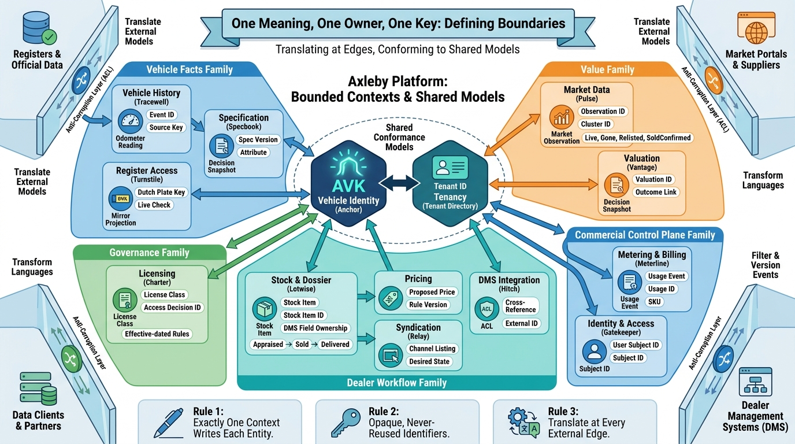

Part I — MARKET: The Business of Vehicle Data and Dealer Software
Drawing the Lines: Bounded Contexts, Entities and Sources of Truth

Image generated by Google Gemini (gemini-3-pro-image-preview)
Part I — MARKET: The Business of Vehicle Data and Dealer Software

Image generated by Google Gemini (gemini-3-pro-image-preview)